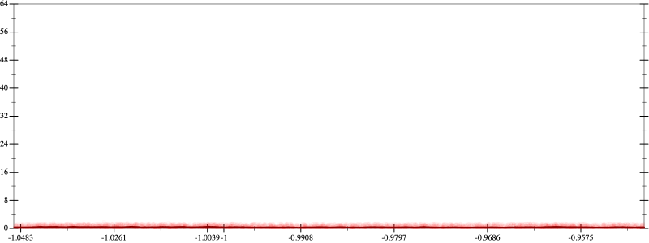
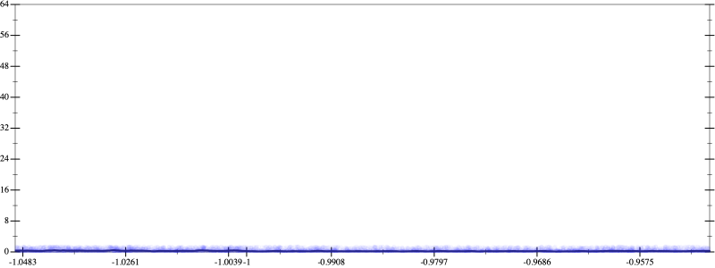
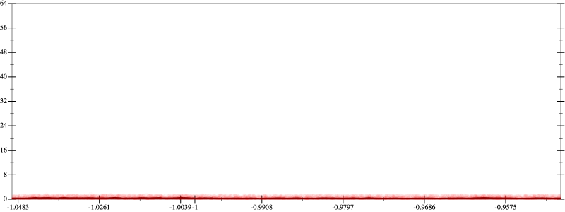
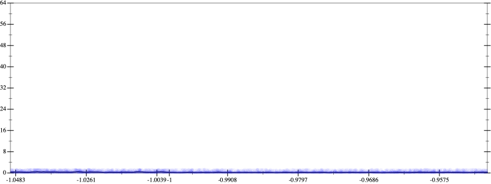

Initial program 0.3
\[\left(\left(1.0 + -3.0 \cdot x\right) + 1.5 \cdot \left(x \cdot x\right)\right) + -0.166667 \cdot \left(\left(x \cdot x\right) \cdot x\right)\]
Applied simplify0.2
\[\leadsto \color{blue}{\left(x \cdot -3.0 + 1.0\right) + \left(1.5 + -0.166667 \cdot x\right) \cdot \left(x \cdot x\right)}\]
- Using strategy
rm Applied flip3-+0.2
\[\leadsto \left(x \cdot -3.0 + 1.0\right) + \color{blue}{\frac{{1.5}^{3} + {\left(-0.166667 \cdot x\right)}^{3}}{1.5 \cdot 1.5 + \left(\left(-0.166667 \cdot x\right) \cdot \left(-0.166667 \cdot x\right) - 1.5 \cdot \left(-0.166667 \cdot x\right)\right)}} \cdot \left(x \cdot x\right)\]
Applied associate-*l/0.2
\[\leadsto \left(x \cdot -3.0 + 1.0\right) + \color{blue}{\frac{\left({1.5}^{3} + {\left(-0.166667 \cdot x\right)}^{3}\right) \cdot \left(x \cdot x\right)}{1.5 \cdot 1.5 + \left(\left(-0.166667 \cdot x\right) \cdot \left(-0.166667 \cdot x\right) - 1.5 \cdot \left(-0.166667 \cdot x\right)\right)}}\]
 
